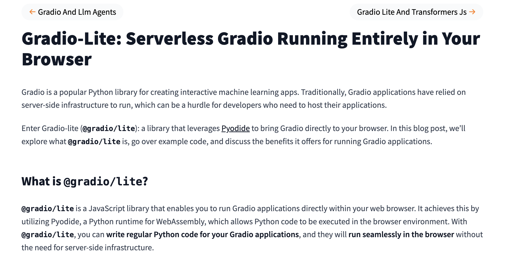

sentiment-analysis | AI Made simple
import gradio as gr from transformers_js_py import pipeline pipe = await pipeline('sentiment-analysis') demo = gr.Interface.from_pipeline(pipe) demo.launch()
transformers-js-py